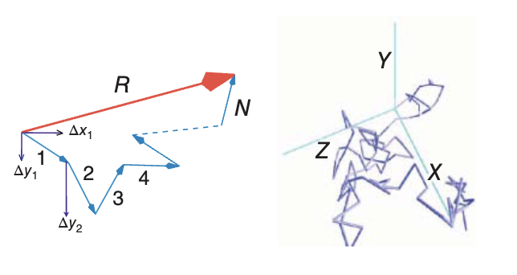
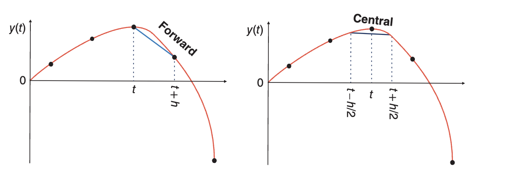
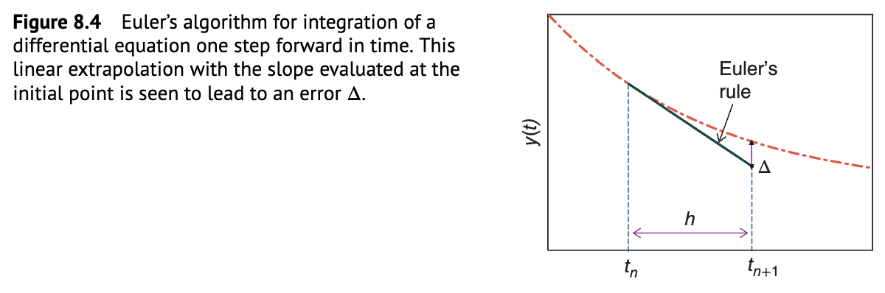
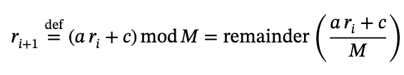

从截断误差、中心差分和 Euler 步进开始，把公式推导落到可运行的 C 程序，再用图像检查收敛与稳定性。
SHO / damping
running
Profile
Physics student. Computational notes. Small tools.
这个站点把 GitHub 账号里的 4 个公开仓库集中展示。核心内容来自 c4phy：误差分析、数值微积分、蒙特卡洛、ODE、双摆、随机行走、自发衰变和球内光线反射；旁支项目记录教材翻译流水线、Obsidian 阅读插件和 GitHub Pages 主页。
我希望这里像一张安静的工作台：能看到正在学什么、写过什么、哪些笔记已经有代码和图像，少一点包装，多一点真实材料。
用线性同余随机数、Monte Carlo 抽样、随机行走和离散衰变连接概率模型、样本统计与理论曲线。
记录中文 STEM 教材的识别、翻译、术语统一、版式重建和最终 PDF 生成流程，服务长文档学习材料整理。
围绕真实学习场景维护小工具：PDF 阅读进度、项目入口页、长文档笔记和公开仓库索引。
Selected Work
GitHub index
公开仓库与 c4phy 模块入口。卡片重点说明每个仓库解决什么问题、当前适合从哪里继续深入。
C01
Profile / Pages
个人主页与 GitHub Profile 展示入口，集中放置学习方向、项目链接和联系方式。
- CSS
- Pages
- Live
C02
c4phy
计算物理主仓库：用 C 写误差分析、数值微积分、Monte Carlo、ODE、双摆、随机行走和衰变模型，用 Python 输出图像和实验记录。
- C
- Physics
- 2 stars
C03
Textbook pipeline
面向长教材的处理流程：PDF 解析、章节结构整理、术语翻译、LaTeX 版式复现和最终英文 PDF 输出，适合沉淀可重复的教材整理方法。
- TeX
- Translation
- STEM
C04
Obsidian PDF progress
Obsidian 插件，用状态栏和文件浏览器标记 PDF 阅读进度，让长文档阅读、教材笔记和复习计划能被持续追踪。
- TypeScript
- Obsidian
- 1 star
C05
Computational physics modules
c4phy 中的双摆、随机行走、阻尼振动、自发衰变、球内反射等模块，主页用图像和 canvas 把这些模块变成可浏览的学术展示。
- Simulation
- Visualization
- Notes
Workflow
C computes. Python explains.
仓库采用清晰的计算工作流：C 负责性能关键的数值循环，把数据写成 CSV 或二进制；Python 负责探索、检查、画图与论文式输出。展示页只保留必要入口，让读者能顺着项目看到笔记、代码和结果。
01
Model
把物理问题写成方程、边界条件和初始条件，先确认量纲、近似和需要观察的量。
02
Compute
用 C 编写数值核心，控制步长、随机种子、误差指标和输出格式。
03
Visualize
用 Python 或 Raylib 检查轨迹、分布、相图、误差曲线和动画结果。
04
Document
把推导、代码入口、图像产物和下一步任务放回笔记与网页。
Notes
Visual notebook
从仓库笔记中选取的图像片段，覆盖随机过程、数值微分、ODE 步进和伪随机数生成，保持项目本身的真实痕迹。




Progress
Learning matrix
笔记、C 代码和可视化之间的完成状态。这里把 c4phy 的主题拆得更细，便于看见下一步工作。
Topic
Notes
C
Viz
Error analysisyesyesopen
Differentiationyesyesyes
Monte Carloyesyesopen
Double pendulumyesyesyes
Decay modeldraftyesyes
Random numberyesyesdraft
Ray reflectiondraftyesopen
Textbook pipelineyesopenopen
Tasks
Current task statistics
计算物理学习与个人项目的当前任务状态。任务内容对应仓库中已经出现的模块、笔记和工具。
Completion
0%
Contact
告文 / zhanghaomin
Nanjing University
zhang.haomin1106@gmail.com